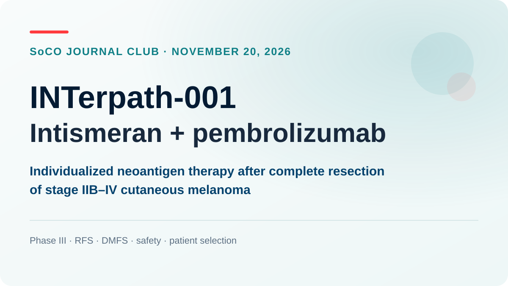

Phase III trial · 2026
Intismeran Autogene plus Pembrolizumab for Resected Stage IIB to IV Melanoma
Long GV and colleagues. New England Journal of Medicine, 2026.

Society of Cutaneous Oncology
2026-11-20
At two years, an estimated 12 more patients per 100 were alive without recurrence when individualized neoantigen therapy was added to pembrolizumab. For a patient already planning adjuvant PD-1 blockade, that difference answers a practical question. For someone leaning toward surveillance, or someone we see before surgery, the decision is different.
Long GV and colleagues. New England Journal of Medicine, 2026.

Nikhil Khushalani opened with KEYNOTE-942, the randomized phase IIb study that prompted this larger trial. INTerpath-001 enrolled patients with completely resected stage IIB–IV cutaneous melanoma. All participants were assigned to adjuvant pembrolizumab. Randomization allocated 757 to receive up to nine additional injections of intismeran autogene, an mRNA therapy designed from each patient’s tumor, and 380 to receive diluent placebo.
The bars show Kaplan–Meier estimates at two years. Hazard ratios summarize follow-up. Recurrence-free and distant metastasis-free survival met their prespecified testing thresholds. Overall survival was immature (HR 0.77, 95% CI 0.45–1.31).
Andrew Knight started with the part of Figure 1 that the overall hazard ratio obscures. The estimated RFS hazard ratio was 0.99 (95% CI 0.66–1.49) in the first six months and 0.42 (0.30–0.58) thereafter. Both groups could begin pembrolizumab while the individualized product was being made. The median time from randomization to first injection was 64 days for intismeran and 45 days for placebo.
Nikhil Khushalani asked what the delay says about the urgency of postoperative treatment. Michelle Brown raised the time needed to mount an immune response. Vishal Patel asked whether outcomes varied with time to the first dose. That analysis was unavailable. When Sanjay Chandrasekaran asked about apparent convergence late in follow-up, Li Fan pointed to the small numbers still at risk beyond 30 months.
At 24 months, estimated recurrence-free survival was 12.2 percentage points higher with intismeran plus pembrolizumab than with pembrolizumab alone. Over those first 24 months, patients in the combination group spent an average of 1.2 additional months alive without recurrence (95% CI, 0.4–2.1).
Of 1,749 people screened, 1,137 reached randomization. Sameer Gupta asked where a personalized therapy could fall out of reach. Michelle Brown clarified that approximately 17% of people entering screening lacked tumor material that met the initial quality requirements. This occurred before randomization and manufacturing. The team could sometimes use another block, additional slides, or the original biopsy. Among randomized participants, the team described one product that missed the protocol’s manufacturing window.
Elizabeth Buchbinder raised a separate question about who was represented. Stage III included people with very different treatment options at diagnosis. The breakdown by clinically apparent nodal disease, microscopic nodal disease, and in-transit disease was unavailable during the discussion. Adewole Adamson cautioned against drawing geographic or other subgroup conclusions from estimates with few events and wide confidence intervals.
Vernon Sondak asked how the trial could reproduce the wait for an individualized product in the placebo arm. The study team described staggering the first placebo injection, masking the syringes, and separating preparation and administration roles. Suzanne Topalian asked what happened after the injection. Fever or an injection-site reaction might give someone a clue.
The Teams chat connected that possibility to investigator-assessed recurrence. The protocol scheduled imaging every 12 weeks through week 96, beginning at week 12. An equivocal finding still leaves room for judgment about additional imaging or biopsy. The group questioned whether suspected assignment might affect that judgment and whether a more reactogenic control would be ethical. The effect of any inadvertent unblinding remains uncertain.
Suzanne Topalian recognized the achievement of delivering individualized treatment across an international trial, then asked what the expanded T-cell clones actually recognized. Michael Wong asked how much of the effect might arise from the delivery platform. A diluent placebo answers the clinical question about adding the complete product. It leaves the contribution of the encoded neoantigens unresolved.
Suzanne Topalian and Michael Wong wanted functional evidence of recognition of the selected targets, including comparable analyses in patients receiving pembrolizumab alone. Laureen Ojalvo described ongoing analyses. Dmitri Grebennik also raised the ethical cost of exposing controls to an investigational formulation solely to mimic adverse effects.
Danielle Brazel and Karam Khaddour walked the group through the safety tables. Grade 3–5 adverse events of any cause occurred in 23.6% with the combination and 20.3% with placebo plus pembrolizumab. An adverse event led to discontinuation of at least one trial agent in 16.6% and 9.5%, respectively. Fever, injection-site symptoms, and flu-like reactions also mattered to patients receiving repeated injections.
The safety population included 755 patients in the combination arm and 380 controls. Eight fatal adverse events occurred in the former group and zero in the latter. Five occurred before the first intismeran dose, including both deaths investigators attributed to pembrolizumab. Investigators judged the three after intismeran dosing unrelated to either agent. Michael Wong emphasized how differently even a rare serious harm can weigh on someone who may already have been cured by surgery.
Suzanne Topalian compared the delayed separation here with the early separation in NADINA. Vernon Sondak pointed out that the two trials started their clocks at different times. NADINA enrolled people with macroscopic stage III disease before surgery, so its event-free survival analysis counted events that could prevent surgery. INTerpath-001 enrolled after complete resection. A patient who progressed before postoperative randomization could never enter its RFS analysis.
The distinction has an immediate clinical consequence. A patient referred with palpable, resectable nodes has a neoadjuvant option. A patient first seen after those nodes have been removed faces an adjuvant decision. Vernon Sondak closed by asking whether individualized therapy might have a role for patients left at high risk after an inadequate neoadjuvant response. The question remains open. NADINA trial
Before Journal Club, respondents described what patients with completely resected melanoma usually receive in their practice. In the same questionnaire, they chose what they expected patients would receive if pembrolizumab plus intismeran were approved, accessible and covered. Each bar shows one choice per respondent. Within each stage and BRAF group, both questions use the same respondents with two complete answers.
For BRAF wild-type stage IIIC, 23 of 23 respondents already favored systemic therapy, and 21 of 23 would choose the combination if available. For stage IIB, 18 of 23 selected surveillance under current practice and 16 of 23 would select it with access to the combination.
The initial BRAF-mutant scenario specified V600E/K. Later versions specified V600E. The figures pool responses across both wordings. Respondents could answer multiple stages and genotypes.
Source · SoCO paired pre-meeting survey export dated 2026-11-21.
Each cell gives the percentage-point difference between hypothetical and usual practice. The final column counts respondents who selected a different option, including switches that canceled out in the overall distribution. The combination was offered only in the hypothetical question.
| Stage | Surveillance | PD-1 alone | PD-1 + intismeran | Changed choice |
|---|---|---|---|---|
| IIB | −8.7 | −17.4 | +26.1 | 26.1%6/23 |
| IIC | 0.0 | −52.2 | +52.2 | 56.5%13/23 |
| IIIA | −13.0 | −26.1 | +39.1 | 39.1%9/23 |
| IIIB | −8.7 | −78.3 | +87.0 | 87.0%20/23 |
| IIIC | 0.0 | −91.3 | +91.3 | 91.3%21/23 |
| IIID | 0.0 | −90.9 | +90.9 | 90.9%20/22 |
| IV resected | 0.0 | −86.4 | +86.4 | 86.4%19/22 |
| Stage | Surveillance | PD-1 alone | Dab/Tram | PD-1 + intismeran | Changed choice |
|---|---|---|---|---|---|
| IIB | −8.7 | −21.7 | 0.0 | +30.4 | 34.8%8/23 |
| IIC | −4.3 | −47.8 | 0.0 | +52.2 | 56.5%13/23 |
| IIIA | 0.0 | −17.4 | −13.0 | +30.4 | 34.8%8/23 |
| IIIB | 0.0 | −56.5 | −26.1 | +82.6 | 82.6%19/23 |
| IIIC | 0.0 | −73.9 | −17.4 | +91.3 | 91.3%21/23 |
| IIID | 0.0 | −72.7 | −13.6 | +86.4 | 86.4%19/22 |
| IV resected | 0.0 | −86.4 | −4.5 | +90.9 | 90.9%20/22 |
The survey asked how clinicians would treat a fit patient with clinically apparent, resectable stage III melanoma who had received no prior systemic therapy. 24.0 respondents are represented in this question, which was added in later versions of the survey.
Source · SoCO pre-meeting survey question summary.
Suzanne Topalian favored surveillance. Nikhil Khushalani would discuss treatment in light of the patient’s baseline risk and favored discussing targeted therapy for BRAF V600 disease. Vishal Patel described a patient who might reasonably choose surveillance but, once committed to treatment, would prefer the combination to PD-1 alone.
David Miller asked for the absolute benefit by substage. With only 50 and 32 stage IIIA patients in the two trial arms, precise estimates would be difficult. For BRAF-mutant disease, Nikhil Khushalani also asked how clinicians would weigh the mature experience with dabrafenib–trametinib. INTerpath-001 did not compare those two regimens directly.
Isaac Brownell asked how many lower-risk patients would need treatment to prevent one recurrence, and what that would cost. Vernon Sondak asked the other half of that question. What does it cost a patient and a health system to treat a distant recurrence, sometimes through several lines of therapy? Both questions depend on the patient’s absolute risk, the durability of benefit, and the consequences of treatment.
The premeeting survey asked how cost or coverage would influence recommendations, taking account of both out-of-pocket costs and overall treatment resources. It specified no price. The chat also raised how long therapy must continue for optimal benefit. INTerpath-001 evaluated the assigned regimen as a whole. The minimum effective number of doses remains an open question.
Respondents considered patient costs, insurance coverage and treatment resources. The question specified no price.
Respondents rated the evidence before the meeting. One answer allowed them to defer judgment until they had reviewed the data.
David Miller moderated, with Kevin Emerick and Vishal Patel bringing the Teams chat into the discussion. We were pleased to welcome Dr. Sophia K. McKinley and Dr. Justin Moyers to Journal Club.
Nikhil Khushalani introduced the trial, Elizabeth Buchbinder reviewed Table 1, Andrew Knight presented Figure 1, and Adewole Adamson examined the subgroup analyses. Danielle Brazel and Karam Khaddour led the safety review. Suzanne Topalian and Vernon Sondak led the closing discussion.
SoCO organized the meeting independently and received no industry funding. Colleagues from Moderna and Merck joined the academic-led review to answer questions about trial design, treatment delivery, and analysis.
40 colleagues attended. Median attendance was 98 minutes 38 seconds. 36 stayed at least an hour.
Teams recorded camera use for 29 attendees, microphone use for 29, and hand raises for 10. In all, 32 used at least one of these features.
| Attendee | Affiliation |
|---|---|
| Adewole S. Adamson | The University of Texas at Austin |
| Andrew D. Knight | Mass General Brigham |
| Claire Verschraegen | The Ohio State University |
| Danielle Brazel | Massachusetts General Hospital |
| David J Savage | University of New Mexico Comprehensive Cancer Center |
| David M. Miller | Mass General Brigham |
| David R. Carr | The Ohio State University |
| Dmitri Grebennik | Merck & Co., Inc. |
| Elizabeth I. Buchbinder | Mass General Brigham |
| Frances Collichio | University of North Carolina |
| Howard L. Kaufman | Mass Eye and Ear |
| Isaac Brownell | National Institutes of Health |
| Juliane Andrade Czapla | Mass General Brigham |
| Justin Moyers | UC San Diego Health |
| Karam Khaddour | Dana-Farber Cancer Institute |
| Kathryn Bollin | Scripps Health |
| Kevin S. Emerick | Mass Eye and Ear |
| Krista M. Rubin | Mass General Brigham |
| Larisa Geskin | Columbia University |
| Laureen S. Ojalvo | Moderna |
| Li Fan | Merck & Co., Inc. |
| Manisha Thakuria | Mass General Brigham |
| Maya Dimitrova | NYU Langone Health |
| Meghan J. Mooradian | Mass General Brigham |
| Mehran Behruj Yusuf | University of Alabama at Birmingham |
| Michael K. Wong | The University of Texas MD Anderson Cancer Center |
| Michelle Brown | Moderna |
| Molly Yancovitz | Beth Israel Deaconess Medical Center |
| Nikhil Khushalani | Moffitt Cancer Center |
| Rhoda Alani | Massachusetts General Hospital |
| Sameer Gupta | Mass Eye and Ear |
| Sanjay Chandrasekaran | UT Southwestern Medical Center |
| Sarah Weiss | Rutgers Cancer Institute of New Jersey |
| Scott Mazzeo | Merck & Co., Inc. |
| Sophia K. McKinley | Mass General Brigham |
| Suzanne Topalian | Johns Hopkins Medicine |
| Toshifumi Hoki | Merck & Co., Inc. |
| Vern Sondak | Moffitt Cancer Center |
| Vishal Patel | George Washington University |
| William J. Benjamin | Mass Eye and Ear |
SoCO thanks the colleagues who led the figure-by-figure review and the study team members who joined the discussion. Laureen Ojalvo and Michelle Brown joined from Moderna. Dmitri Grebennik, Scott Mazzeo, Toshifumi Hoki, and Li Fan joined from Merck.
First ask which decision the patient actually faces. If they already plan to take pembrolizumab, INTerpath-001 gives them an estimate of what adding intismeran could buy over two years. If they are choosing between treatment and surveillance, they also need an estimate of their risk after surgery alone. If surgery is still ahead, the order of treatment is itself part of the decision.
Building on SoCO’s Art of Authorship workshop, David Miller invited participants interested in developing a Perspective on the Science to reach out with the contribution they would like to make.